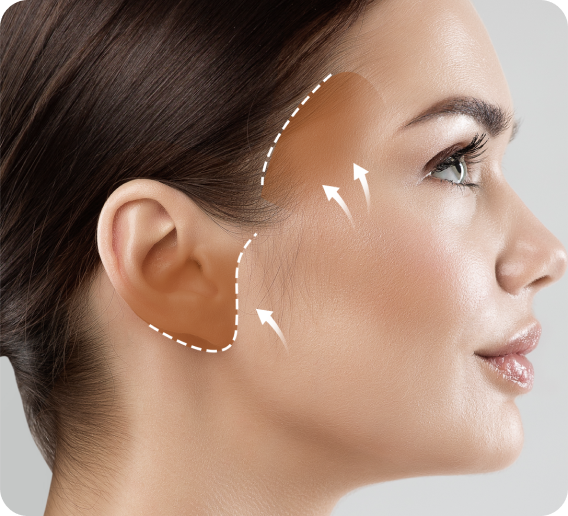
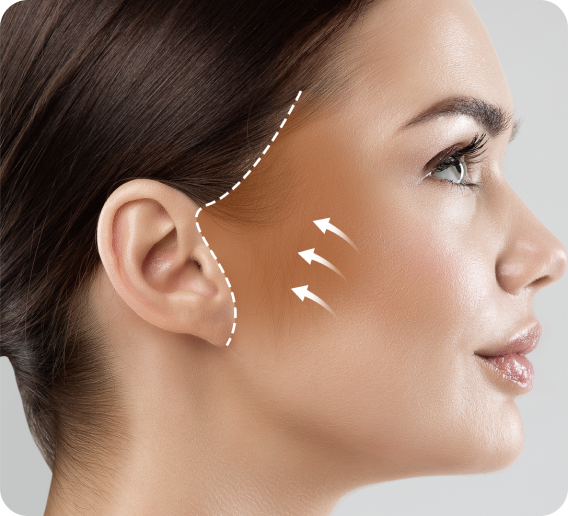
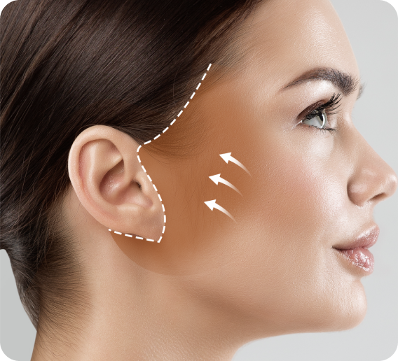
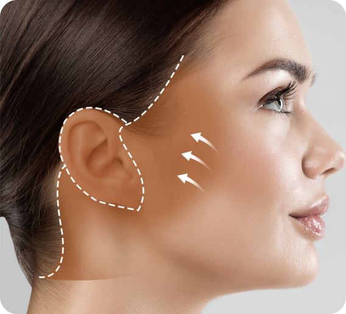
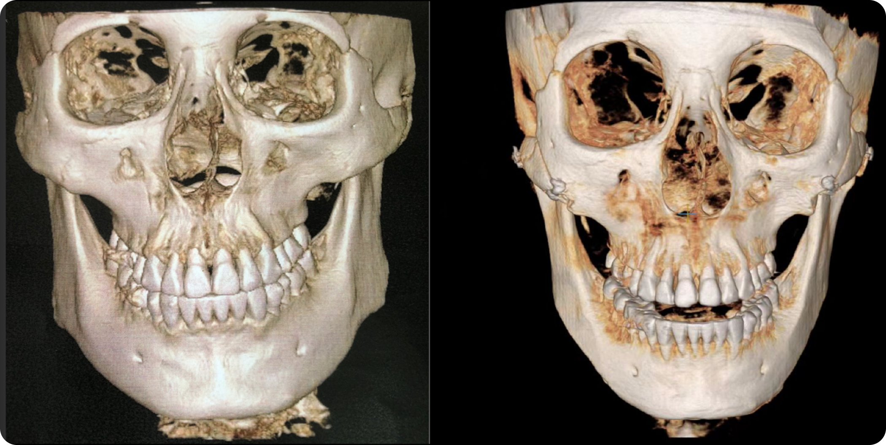

동안성형
예쁜 라인만 남기고 부드럽게 남기다
셀러블153 동안성형
오직 한 환자만을 위해서 노련한 기술로 책임감 있는 집도
동안성형 기본 정보
동안성형 대상
-
수술시간4~ 시간
-
치료방문1회~2회
-
마취방법수면마취
-
회복기간7일
-
입원당일 퇴원
-
실밥제거7~10일째
- 기존에 리프팅 수술 후 효과가 없으셨던 분
- 심한 볼처짐, 턱선 무너짐, 입가주름, 팔자주름, 세로 목주름 개선
- 실제거, 필러제거 등 이물질 제거와 함께 하고 싶은 분
- 복합적인 처짐을 가지고 있는 중장년층
- 또래보다 나이들어보이는 얼굴이 콤플렉스인 분
- 윤곽, 양악수술 후 처짐으로 리프팅을 고민하는 분
매끄러운 얼굴라인, 셀러블153 안면거상술
안면거상술은 거상수술 중 가장 박리범위가 큰 수술입니다. 제대로 된 거상을 위해
셀러블153의 원장님께서는 고도의 집중력을 발휘하여 진행하고 있습니다.
셀러블153의 원장님께서는 고도의 집중력을 발휘하여 진행하고 있습니다.
- 
- 
- 
- 
셀러블153 동안성형의 특징
안면거상술을 하더라도 각자 필요한 안면거상술의 여러 형태가 있을텐데 셀러블153에서는
전문 의료진이 직접적인 상담 후 본인에게 필요한 안면거상 플랜으로 제안드립니다.
전문 의료진이 직접적인 상담 후 본인에게 필요한 안면거상 플랜으로 제안드립니다.
셀러블153은 사후 케어와 함께 안면거상 수술 후 나타나는 감각이상, 부기, 멍을 포함한 혹시 모를 상황에
환자를 절대 방치하지 않고 체계적인 케어를 약속 드리고 있습니다.
환자를 절대 방치하지 않고 체계적인 케어를 약속 드리고 있습니다.
-
적은흉터
-
빠른회복
-
원장님의 남다른 꼼꼼함
-
확실한 효과
-
매끄러운 얼굴라인
-
정직하고 안전한 수술환경
안면거상술
최소한의 절개창, 벌어진 헤어라인 흉터 개선까지 가능
-
안면거상술최소한의 절개창, 벌어진 헤어라인 흉터 개선까지 가능한 수술과정
-
수술특징
- 기존 거상수술 후 효과가 없으셨던 분들에게 추천합니다.
- 피부층, 진피층, 근막층, 유지인대 컷팅, 각 층별 정확한 박리를 시행합니다.
- 박리범위가 큰 만큼 복합적인 처짐개선에 도움이 됩니다.
- 목거상, 칼귀교정, 이중턱근육묶기등 추가적인 수술과 함께 가능합니다.
-
맞춤 디자인눈높이에 맞게 라인 디자인
-
피부 및 근막박리미세한 홀을 통해 지방제거 후 피부와 상안검거근 사이의 자연스러운 유착 유도
-
근막층 및 피부고정눈꺼풀 안과 밖을 연결
-
3Point 봉합흉터 없이 자연스러운 눈매 완성
- 셀러블153 동안성형 장점 체크포인트
-
-
1개인별 주름 라인에 따른 앞 절개귀 모양에 따른 귀 뒤 절개흉터 최소화셀러블153의 안면거상은 흉터 최소화로 완벽함을 나타냅니다.
-
2넓은 SMAS 근막 박리 & 여유 있는 피부 절제!셀러블 153은 앞볼과 턱 유지인대에 이르는 넓은 박리를 통해 피부에 가는 장벽을 줄여 흉터가 적게 생기도록 하고 있습니다.
피부에 전해지는 장력을 줄일 수 있는 디자인을 하여 흉터를 줄이는 수술을 집도합니다. -
3수술 후 3일수술 후 1개월수술 후 6개월수술 만큼이나 중요한 봉합!흉터 치유를 위해서 꼼꼼한 봉합도 중여합니다. 안면거상술의 매우 중요한 부분을 차지하는 것이 재단과 봉합입니다.
피부 밑 녹는 실의 고정 위치와 귓볼 고정에 대한 남다른 노하우를 통해 흉터가 적고 칼귀가 생기지 않는 결과를 제고합니다.
-
- 셀러블153 사후 관리
-
-
수술 전수술 후사후 관리셀러블153에서는 수술 후 완벽한 관리를 통해 흉터는 물론, 안정적인 회복을 위해 빠른 조치가 필요한 경우, 의료진이 어떻게 대처하느냐에 따라 그 결과는 크게 바뀔 수 있습니다. 특히 수술 후 2주 이내의 사후 관리가 중요합니다. 셀러블153은 수술하신 환자의 피부상태, 근육, 조직, 회복의 정도에 따라 맞춤 관리를 진행하고 있습니다.
-